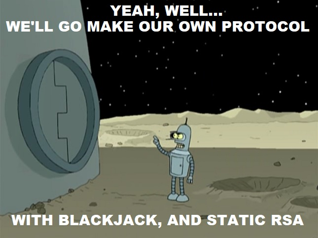

Graham Sutherland - Nettitude Research & Innovation
SSL - Secure Sockets Layer
TLS - Transport Layer Security
PKI - Public Key Infrastructure
TIA - TLS Interception Application
PRF - Psuedo-Random Function
KX - Key Exchange
AEAD - Authenticated Encryption with Associated Data
SSL 1.0 - Never released
SSL 2.0 - 1995 (no standard)
SSL 3.0 - 1996 (RFC 6101*)
TLS 1.0 - 1999 (RFC 2246)
TLS 1.1 - 2006 (RFC 4346)
TLS 1.2 - 2008 (RFC 5246)
TLS 1.3 - 2018 (RFC 8446)
SSL 2.0 - 2011 (age 16)
SSL 3.0 - 2015 (age 19)
TLS 1.0 - 2020 (age 21)
Reactionary changes
Whack-a-mole
Padding oracles (MAC-then-CBC)
3DES meet-in-middle
RC4 attacks
Compression oracles
Complex KX options
Renegotiation abuse
RSA (many footguns)
MAC-then-CBC was problematic
No more AES-CBC
No more 3DES-CBC
No more padding oracles
Klien's attack, Royal Holloway attack
Bar-mitzvah attack, NOMORE attack
CRIME defeated
BREACH remains
No more downgrade attacks
Certificate type separated from cipher suite
Key exchange type separated from cipher suite
Weird & unused elliptic curves removed
Parameters now decided in handshake
TLS_ECDHE_RSA_WITH_AES_128_CBC_SHA256
^ ^ ^ ^
KX cert cipher/mode MAC/PRF
TLS_AES_128_GCM_SHA256
^ ^
cipher/mode MAC/PRF
Not strictly broken for HMAC or PRFs yet
Preventatively removed - less to implement
All key exchange is now ephemeral
Forward secrecy for everyone
We'll talk more about this later...
ESNI public key in DNS
Client encrypts SNI record
Server decrypts SNI record + traffic
Eavesdropper can't see SNI
ESNI public key in DNS
Client encrypts SNI record
Middleware decrypts SNI record
Server decrypts traffic
Eavesdropper can't see SNI
Middleware can't see traffic
Time to first byte (TTFB) is critical
TLS 1.2: 2 RTs (5x latency)
TLS 1.3: 1 RT (3x latency)
0-RTT: 0 RTs (1x latency)
But... here be dragons
We'll cover this later.
TIA vendors love this stuff
TLS 1.3 removes this stuff
This breaks many TIAs
Banks use TIAs
Banks unhappy
BITS (Financial Services Roundtable)
Sent to TLS working group
TL;DR - "Bring back that broken stuff"
"TLS 1.3 Impact on Network-Based Security" - Oct 2018
TL;DR - "Bring back that broken stuff"
Written mostly by Cisco :(

¯\_(ツ)_/¯
0-RTT feature allows for client message replay
Clients should only use 0-RTT for idempotent requests
Thankfully most clients have some protection
Still requires careful thought by devs
Playback - BH US 2018 - Alfonso García Alguacil & Alejo Murillo MoyaGreat for CDNs
Mostly OK for GETs*
Bad for POSTs
* assuming you don't change state on a GET| Internet Explorer | Unsupported |
| Microsoft Edge | In development (not public) |
| Mozilla Firefox | Supported as of version 53 |
| Mozilla Firefox for Android | Supported as of version 70 |
| Google Chrome | Supported as of version 56 |
| Google Chrome for Android | Supported as of version 63 |
| Apple Safari | In development (opt-in) |
| Apple Safari for iOS | Unsupported |
| Opera | Supported as of version 57 |
| Opera for Android | Supported as of version 57 |
| Android Browser | Unknown* |
| Blackberry Browser | Unsupported |
| Samsung Internet | Supported as of version 6.2 |
* support likely tied to version of Chrome for Android installed due to Chromium dependency
|
|
No support in .NET Framework, .NET Core yet.
* requires OpenSSL 1.1.1 or later
Draft replaces PSK with DHE
Initially abandoned but will potentially return
Design derived from QUIC
Unknown if this will gain traction
Effectively ESNI but for all fields
Would protect privacy-sensitive fields like ALPN
Actively being worked on